Trojan SQL
Ich habe bereits über Ideen geschrieben, die TrojanSource-Vulnerability in anderen Kontexten zu untersuchen - ein Vorkommnis in dem Job, mit dem ich mir das Geld für Kuchen verdiene hat mich jetzt angestachelt, diese Untersuchung tatsächlich umfangreich und gründlich durchzuführen. Dieser Beitrag wurde zum CCC End-of-year event 2021 eingereicht und abgelehnt.
Die Quellen der Präsentation, die ich eingereicht hatte sind hier zu finden, die Präsentation selbst ist hier live zu betrachten.
Die Überschrift ist reißerisch und drückt nur einen kleinen - von mir tatsächlich untersuchten - Bereich des interessanten Gebiets aus. Ich hatte ja bereits untersucht, ob man mit Unicode-Control-Characters in einer Datenbank Unfug anstellen kann - das Ergebnis war positiv.
Durch den schon angedeuteten Auslöser wurde ich motiviert, nachzusehen, ob es nicht auch möglich wäre, die im urprünglichen Paper vorgestellten Angriffsszenarien in SQL-Skripten umzusetzen. Ich suchte mir dazu das Szenario des Auskommentierens aus - Dabei wird Code, der bei oberflächlicher Inspektion durch einen Reviewer als Kommentar wahrgenommen wird in Wirklichkeit durch das Zielsystem als Code interpretiert und so ausgeführt.
Mein Ansatz war, durch einen Kommentar eine WHERE-Klausel in einem SQL-Statement unwirksam zu machen - ganz ähnlich den berühmten SQL-Injection-Angriffen und doch anders. Das Ziel war also, dass ein Reviewer das SQL-Fragment wie folgt wahrnimmt:
select * from example where name<>'John' -- this is a comment
während der Computer (die Datenbank) das folgende Statement ausführt:
select * from example where name<>'John -- this is a comment'
Dafür müssen zwei Ziele erreicht werden:
- Der Reviewer muss anderen Text sehen, als die Datenbank verarbeitet
- Die Anreicherung mit Unicode-Control-Characters darf bei der Ausführung der manipulieren Statements nicht zu Syntaxfehlern führen
- Source code management
- Gitlab
- Github
- Gitea
- Editors (IDE)
- Gedit
- Kate
- Terminal (vim, joe, nano)
- Intellij Idea
- Database tools
- SQL Developer
- MSSQL Server Studio
- sQLshell
- phpMyAdmin
- pgAdmin
- Postgres
- MS SQL Server
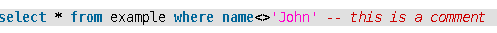
Gültiges SQL Statement
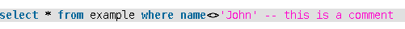
Manipuliertes SQL StatementDieses Verhalten zeigen viele der untersuchten Anwendungen.
Für die Anwendungen aus dem Bereich Source Code Management wurde untersucht, wie manipulierte Quelltexte gehandhabt werden - und dies in folgenden Bereichen:
- eingecheckte Quelltexte
- Skizzen (Gists)
- Beschreibungen und Kommentare von Issues
Bei Gitlab konnte ich feststellen, dass in allen untersuchten Bereichen die gleichen Maßnahmen ergriffen wurden - hier ein exemplarischer Screenshot:
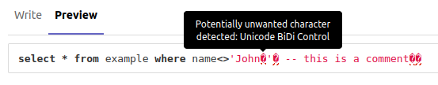
Gitlab Kommentar an einem IssueBei Github musste ich feststellen, dass lediglich eingecheckte Dateien und Gists eine entsprechende Warnung auslösten:
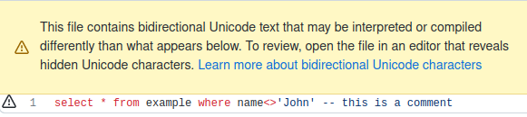
Github Warnung an einer eingecheckten DateiAllerdings besteht das Problem weiterhin bei Issues - sowohl in den Beschreibungen als auch Kommentaren:
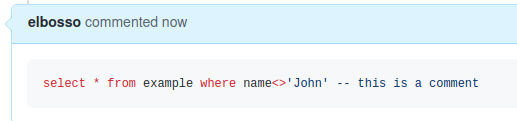
Github Kommentar an einem IssueIch reichte daraufhin einen Bugreport ein, der jedoch mit folgender Begründung abgelehnt wurde:
Specifically, the danger presented by the Trojan Source vulnerability is source code that executes code that does something other than what it displays. Code snippets inside issue comments do not get executed and therefore do not present a direct security risk. If the code inside of an issue comment is ever included in the source code by adding it to a file inside of GitHub, then the warning message will be displayed.
Überflüssig zu erwähnen, dass ich die dadurch entstehende Bedrohung als durchaus real ansehe. Ich denke da zum Beispiel an die beliebten Phishing-Mails, die den Einfruck erwecken, als stammten sie vom Chef - wenn es jemand schafft, einen Github-Account zu kapern und dann legitim erscheinende Kommentare zu hinterlassen wie etwa "Kannst Du das folgende SQL bitte im Wirkbetrieb einspielen - sollte den Incident xy lösen" wäre das ein möglicher Weg, schlimme Schäden im System anzurichten.
Bei Gitea hatte ich zunächst den Eindruck, dass man von der Trojan Source Attacke noch keine Kenntnis erlangt hatte, da weder Dateien noch andere Aspekte irgendwie vor entsprechend manipuliertem Text warnten:
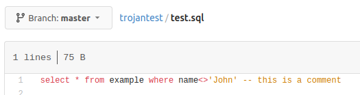
Gitea, eingecheckte DateiMein Bugreport wurde sehr schnell mit dem Hinweis auf einen Pullrequest beantwortet. Man diskutiert also bereits sehr lange über die Ausgestaltung der Warnung, vergisst aber, diese aktiv zu schalten. Aus meiner Sicht ein eher fragwürdiges Herangehen an das Problem.
Für die Editoren/IDEs lasse ich hier die entsprechenden Screenshots sprechen:
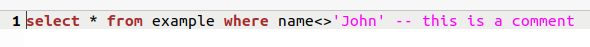
Gedit - mangelhaft
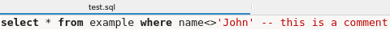
Kate - mangelhaft
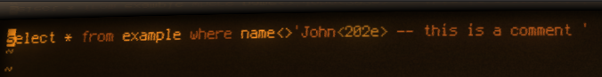
Vim - ausreichend
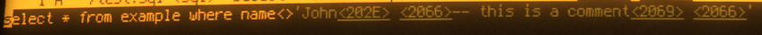
Joe - hervorragend
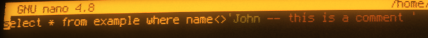
Nano - verwirrend
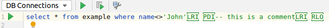
Intellij Idea - hervorragendAuch für die Datenbank-Tools werden wieder die Screenshots sprechen:
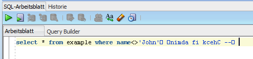
SQL-Developer - ausreichend
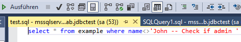
MS SQL Server Studio - hervorragend
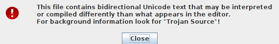
sQLshell - ausreichendAn dieser Stelle sei eine kurze Ausschweifung gestattet: Die Sprache Java wurde zwar im ursprünglichen Paper bereits behandelt - allerdings nur in ihrer kompilierten Form.
Es existiert aber noch das Projekt BeanShell, das Java-Code zur Laufzeit interpretieren und ausführen kann. Dafür wiederum existiert mit der BeanShell Konsole eine REPL-Umgebung, die in der aktuellen Release gegen entsprechende Angriffe keinen Schutz bietet, da kein Syntax-Highlighting erfolgt:
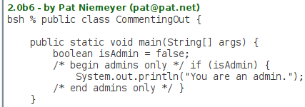
BeanShell Konsole in aktueller ReleaseIch forkte daher die aktuelle Snapshot-Version und ereichte damit zumindest ein Syntax-Highlighting, das bei aufmerksamem Lesen auf solche Probleme aufmerksam machen würde:
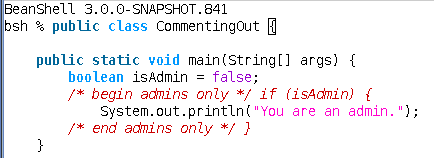
Aktuelle Snapshot-Version der BeanShell Konsole mit meinen ÄnderungenIm Zuge dieser Untersuchungen führte ich den bereits als Screenshot bei der sQLshell gezeigten Dialog.
Beide untersuchten Datenbanken zeigten, dass die in das SQL-Statement eingestreuten Unicode-Control-Characters keine Syntaxverletzungen hervorriefen und die Statements verarbeitet wurden - damit ist dann auch klar, dass solche Angriffe erfolgreich sein können - die folgenden Screenshots zeigen eine Tabelle mit beispieldaten und das erwartete Resultat verglichen mit dem tatsächlichen:
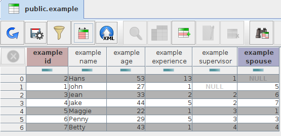
Beispiel-Tabelle mit Daten
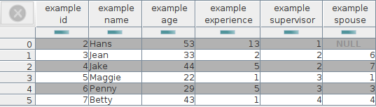
Erwartetes Ergebnis
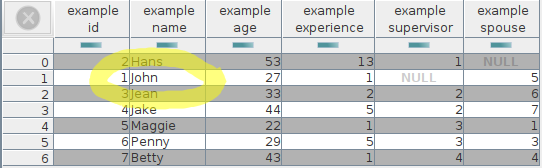
Tatsächliches ErgebnisHierauf aufbauend könnte man weitere Analysen vornehmen - beispielsweise:
- Trojan NoSQL
- Andere interpretierte oder Domain Specific Languages
- andere Projekte überzeugen, entsprechende Gegenmaßnahmen zu ergreifen


Vor 5 Jahren hier im Blog
-
Multi-Agenten-Systeme in dWb+
31.12.2016
Ein Anwendungsszenario für dWb+, das bisher noch keine größere Beachtung gefunden hat - auch in der Dokumentation! - ist die Modellierung von Multi-Agenten-Systemen. Ich werde hier zunächst auf einige grundlegende Überlegungen dazu eingehen und später über erste Ergebnisse informieren
Weiterlesen...
Tags
Android Basteln C und C++ Chaos Datenbanken Docker dWb+ ESP Wifi Garten Geo Git(lab|hub) Go GUI Hardware Java Jupyter Komponenten Links Linux Markup Music Numerik PKI-X.509-CA Python QBrowser Rants Raspi Revisited Security Software-Test sQLshell TeleGrafana Verschiedenes Video Virtualisierung Windows Upcoming...
Neueste Artikel
-
CI/CD Pipelines für DocBook-Dokumentationen
Nachdem ich neulich die Handbücher für die Anwendungen dWb+ und EBCMS sowie für das Framework dmcc, das beispielsweise im Aviator und auch in dWb+ zum Einsatz kommt auf Gitlab veröffentlicht habe, habe ich entsprechende CI/CD Pipelines eingerichtet, die dafür sorgen, dass die aktualle Version der jeweiligen Handbücher immer als PDF und EPUB abgerufen werden kann.
Weiterlesen... -
ATTiny85 und Micronucleus Bootloader
Nachdem ich festgestellt habe, dass es auch mir möglich ist, ein einfaches Custom Keyboard selbst zu bauen und bereits mit dem Entwurf einer entsprechenden Schaltung begonnen hatte, wollte ich von der Bastellösung mit dem Digispark wegkommen
Weiterlesen... -
Mein Open Source Manifest
Im Zuge des großen Log4J-Problems ist ja viel - auch viel dämliches - im Zusammenhang mit OpenSource-Projekten und ihrem Stellenwert verzapft worden
Weiterlesen...
Manche nennen es Blog, manche Web-Seite - ich schreibe hier hin und wieder über meine Erlebnisse, Rückschläge und Erleuchtungen bei meinen Hobbies.
Wer daran teilhaben und eventuell sogar davon profitieren möchte, muß damit leben, daß ich hin und wieder kleine Ausflüge in Bereiche mache, die nichts mit IT, Administration oder Softwareentwicklung zu tun haben.
Ich wünsche allen Lesern viel Spaß und hin und wieder einen kleinen AHA!-Effekt...
PS: Meine öffentlichen GitHub-Repositories findet man hier.